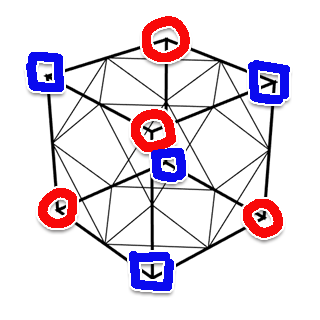
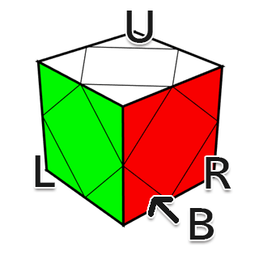
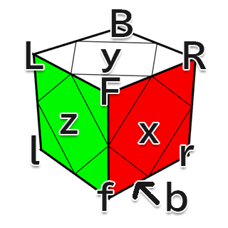
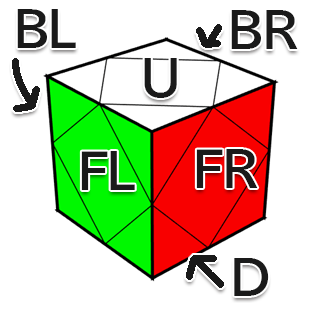

ルービックキューブ関連 > Skewb
Skewbの解法。Sarah中級＋α。
参考: https://www.jaapsch.net/puzzles/skewb.htm

Skewbの回転記号は、WCA regulationに規定されたスクランブル用の記法と、解法で一般的に使われる記法が異なる。 スクランブル用の記法の R と l などは持ち替えを除けば同じであり、両方を使う必要は無いので4通りの動きのみを定義しているのだろう。 一方で、解法ではこれらの動きを分けて扱いたい。 しかし、スクランブル用の記法を8通りに自然に派生させることができないから、別途動きが定義されたのだと思う。
スクランブル用。

解法用。

回転は英字の頂点を回す。 持ち替えは、書いてある面が時計回りになるように回す。 持ち替えの記号は、スクランブルのときに持つ向きで、色が3x3x3と同じ。
この記事では、回転の英字でコーナーを表すことにする。 面とセンターは次のように定める。

r' R r R' の4手をスレッジハンマーと言い、S で表す。 指使いは次の記事中の動画を参照。 左手の親指をFL面、左手の人差し指をBL面、右手の親指をFR面、右手の人差し指をBR面に置き、これらの指を置いた面から離さずに回す。
R r' R' r の4手をヘッジスラマーと言い、H で表す。 上の記事にヘッジスラマーの動画もある。 スレッジハンマーを回し終えた後の指の配置にして回すこともできるが、指を持っていくまでに少し時間が掛かる。 そこで、右手親指はBR面に置くが、右手人差し指はFR面まで持っていかずU面のあたりに置く。 これでは3手目の R' を右手で回せないので、3手目は左手人差し指をUに引っ掛けて回す。
以降の解法はSarah's MethodのIntermediate Variation（Sarahメソッド中級）を元にしている。
Sarah's Cubing Site — Skewb — Sarah's Method
の順で揃えていく。
FL面のセンターとコーナーを側面も含めて揃える。
まずは、FL面の隣接する2個のコーナーを揃える。 各図で、黄色のコーナーが赤色の位置にあるとき、青色の場所に1手で移動できる。 1手で移動できないならば、赤色の位置で向きを変えれば良い。
次の配置になっているとき、左は R' b'、右は R U の2手で揃う。 位置が入れ替わることに注意。
3個目のコーナーは、赤か緑の位置にあるときに1手で揃えられる。 なお、Skewbの構造上、残り2個のコーナーの位置は入れ替わることが無いので、FL面色だけを見れば良い。 向きが違うとき、赤色の位置で向きを変えれば、すでに揃えた2個のコーナーが崩れない。
3個のコーナーが揃っているときに、4個目のコーナーを揃える1手以外の手順。
参考: Skewb~CLLを覚えずに平均sub5へ~②[一面編] - るびぶろぐ
| 画像 | 手順 | 画像 | 手順 | 備考 |
|---|---|---|---|---|
| r' R r | R r' R' | 他は基本的に1手でこの形に持っていく。 | ||
| R r' R r | r' R r' R' | |||
| R' r' R r | r R r' R' | |||
| R r R' r' | r' R' r R | 向き違いでFL面にある場合には、この手順でも揃えられる。 揃っているコーナーを避けておき、揃っていないコーナーの向きを変えるときに戻す手順。 左は上の手順が、右はこの手順が回しやすい。 |
2個のコーナーが向き違いでFL面にある場合の手順。 2個のコーナーを揃えたとき、各コーナーは1手でFL面に持っていける。 3個目のコーナーを揃えることと、この形に持っていくことの両方を考えると良い。
| 画像 | 手順 | 備考 |
|---|---|---|
| R' r R r' | FR面を向いているほうのコーナーを先に揃えると、もう1個のコーナーが1手で揃う形になる。 | |
| r R' r' R | 上の逆手順でもあるし、上下反転させた手順でもある。 | |
| r R' r2' R r | 素直に揃えようとすると、r R' r' r' R rとなり、3手目と4手目はまとめて回せる。 | |
| r' R' r' R r' | 3手目を r2 とすると、4手目が回しづらい。 |
BR面を揃える。 なお、BR面を揃えれば側面（コーナーの位置）は常に揃う。
参考: Sarah's Cubing Site — Skewb — Sarah's Method
| 画像 | 手順 | 備考 |
|---|---|---|
| S z2 S | BR面センターをBLに置く。同じ向きから H z2 H でも良いが、スレッジハンマーのほうが回しやすい。 |
S z2 S は後述のU-permと同じ手順。 書き下すと、r' R r R' z2 r' R r R' になる。 4手目の R' と5手目の z2 を合わせて、r' R r l' x y' r' R r R' と回せると良い。
スキューブのUパームを0.5秒で回す方法 - YouTube
この動画のように回せるとなお良い。 r' R r l' L' l U' l' と回している。 持ち替えを除けば、キューブの動きは同じ。 5手目の L' はUコーナーに左手人差し指を引っ掛けて回す、7手目の U' はLコーナーに左手薬指を引っ掛けて回す。
| 画像 | 手順 | 備考 |
|---|---|---|
| S | ||
| H | ||
| S S | ||
| S z S z2 S | ||
| S z' S z2 S |
コーナーの向きはこの1通りしかなく、BR面センターの位置によって状態が決まる。
BR面センターがコーナーのBR面が1個しか無い面にあるならば、その面をFR面に持ってくる。 U面にコーナーのBR面が無いなら S、2個あるなら H。
BR面センターがコーナーのBR面が0個か2個の面にあるならば、S でコーナーを揃える。 そうすると、BR面センターがU面 ↔ D面で入れ替わるので、それをFB面に持ってきて S z2 S。
BR面センターがBR面にあるならば、S S。
参考: https://www.youtube.com/watch?v=k1nSreset5c
素直に S S を回そうとすると、1回目の S の後にリグリップが必要になる。 S S を書き下すと、r' R r R' r' R r R'。 これは、r' R r R' r2 l U l' と同じ。 7手目の U を左手薬指をLコーナーに引っ掛けて回すと、リグリップが不要になる。
参考: Skewb~CLLを覚えずに平均sub5へ~①[LL編] - るびぶろぐ
1回のスレッジハンマーかヘッジスラマーで対面が完成する状態を考える。 スレッジハンマーもヘッジスラマーも、U面 ↔ D面 と FR面 ↔ BR面 のセンターを入れ替える。
よって、U面かD面（どちらか一方を確認すれば良い）のセンターの色がコーナーの側面と合っていて、BR面にあるセンターとFR面にあるコーナーの側面が対面色の場合は、スレッジハンマーやヘッジスラマーを回すとH-permになる。
H-permは回しにくい。 そこで、残りがスレッジハンマーかヘッジスラマー1回という状態でセンターがH-permになる配置だった場合には、z2 した向きから次の手順を回すと、H-permを回避し、キューブを完成させることができる。
| 画像 | 手順 | 備考 |
|---|---|---|
| S z2 H | ||
| H z2 S |
元がスレッジハンマーなら1手目がスレッジハンマー。 ヘッジスラマーも同様。
BR面センターがBR面に無い状態と手順は次の通り。 左右は同じ状態の開始面違い。
| 画像 | 手順 | 画像 | 手順 | 備考 |
|---|---|---|---|---|
| S z' S | H z S | |||
| S z H | H z' H | |||
| S z' H | H z H | |||
| S z S | H z' S |
各状態でどちらか一方の手順を覚えるならば、BR面センターがU面にあるほうにすると、次のように判断できる。 回し始める前に、U面にコーナーのBR面があるなら1手目は S で無いなら H、FR面にコーナーのBR面があるなら3手目は S で無いなら H。 2手目は常に z'。
BR面がセンターにある状態は1個のみ。 手順が色々ある。
| 画像 | 手順 | 備考 |
|---|---|---|
|
H z H z S
H z' S z' S
|
||
|
S z H z H
S z' S z' H
|
||
|
S z S z H
S z' H z' H
|
||
|
H z S z S
H z' H z' S
|
色々な向きから回せるべきではあるのだろうが、とりあえずは、コーナーのBR面が2個とも見える向きにしての H z' S z' S が、分かりやすく、スレッジハンマーが多くて良いだろうか。
2面を揃えた後は、センターは完成状態と次の3通りの状態しかない。
参考: Skewb~CLLを覚えずに平均sub5へ~①[LL編] - るびぶろぐ
| 名前 | 画像 | 手順 | 備考 |
|---|---|---|---|
| U-perm | S z2 S | センターとコーナーが対面色の面をFRにする。指使いは、U-permの指使いを参照。 | |
| H-perm | R' r b' R r B' R r' | Sarahメソッドではスレッジハンマー4回の手順になっているが、スレッジハンマー2回とヘッジスラマー1回の S z2 H z2 S でも揃えられる。 | |
| Z-perm | R2 r R' B' r' B' r B R' |
参考記事からリンクされている動画を参照。
右手親指は、最初にD面に置き、D面にあるセンターに合わせて動く。 この右手親指の動きに注目したら理解ができた。
参考記事からリンクされている動画を参照。
H-permの指使いと同様に、右手親指は最初にBR面に置き、BR面にあるセンターに合わせて動く。
Last 3/4 centers。 コーナーが揃っていて、BR面を含む3個か4個のセンターが揃っていない状態の手順を覚えておくと有益。
完全1面を作った時点でコーナーが全て揃っている確率は1/9。 そのうち4/5はBR面センターが揃っていない。 また、コーナーが2個揃っている確率は4/9で、そのうち2/5はコーナーが揃っていてBR面センターが揃っていない状態を経由する。 合わせて、12/45 = 27%の確率で、解いている途中にコーナーが揃っていてBR面センターが揃っていない状態が出てくる。 また、順列を生成して確認してみると、BR面センターが揃っていないときに、3個のセンターが揃っていない確率は25%、4個は25%、5個が50%。 検証スクリプト。 ということで、7.5回に1回は使える。 また、最適なものを求めなければ、手順も簡単。
参考:
| 画像 | 手順 | 備考 |
|---|---|---|
| b S z2 S R' | b でセットアップしてU-perm。U-permでキューブの向きが変わるので、最後は b' ではなく R' になる。 スレッジハンマーの最後は R' なので、実際には合わせて R になる。 | |
| B' S z2 S r | B' でセットアップしてU-perm。 上との見分け方は、BR面センターがFR面に来るようにして、D面とU面のどちらが揃っていないか。 揃っていないほうをBR面に送るように b' か B'。 | |
| S S S | トリプルスレッジ。 指使いはS Sの指使いを参照。 | |
| R' S S S R | R' でセットアップしてトリプルスレッジ。 最後の R はスレッジハンマーの最後の R' とキャンセルして消える。 | |
| r S S S r' | r でセットアップしてトリプルスレッジ。 r は実際には S の最初の r' を回さないということ。 これら3個の状態は、揃っていない面をBR, U, FR, Dに置いて判断すれば良い。 |